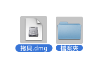
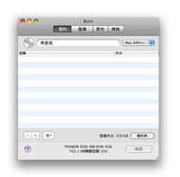
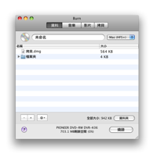
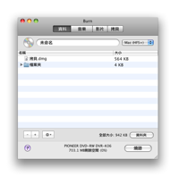
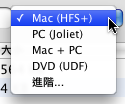

燒錄資料光碟:
資料光大多使用在電腦. 有一些不同類型的資料光碟, 所有的格式都有他們的用途. Burn 可以建立大多數相容的光碟.
1 選擇一些檔案
他可以是檔案或資料夾.

2 拖曳他們到清單裡
拖曳檔案到清單裡.要使用單一資料夾作為配置拖曳他到資料標籤附近的清單.
 

選擇一個檔案系統:
Mac (HFS+):
如果您要使用這個光碟只有在Mac上請選擇這個檔案系統. Windows 無法讀取這個檔案系統.
PC (Joliet):
這個檔案系統是大多數相容的CD並請可以在大多數的電腦中讀取. 他也可以使用在DVD上.
DVD (UDF):
這個檔案系統是大多數相容的DVD. 他可以被大多數的現在電腦讀取 (這包含 Mac OS 9 系統與 Windows 98 系統). 他也可以使用在CD上. (這個項目是不允許使用在 Panther)
Mac + PC:
這是一個混合 Mac 檔案系統 + a PC 檔案系統. 他可以被幾乎所有的電腦所讀取, 但是他保留 Mac 原封的特定資訊 (像是 icons 與資源分歧).
進階:
整合上述檔案系統.也有 ISO9660 (舊的 PC 檔案系統), 標準HFS (舊的 Mac 檔案系統) 與 UDF / ISO 9660 在Panther上.

4 點擊燒錄
這將出現一個對話框.

5 選擇選項
選擇燒錄區段的選項. 須要更多的設定, 請檢視在Burn清單中裡的偏好設定.

6 燒錄光碟
現在按下燒錄以燒錄光碟.

7 Burn
將燒錄光碟
當燒錄時 Burn 將會顯示一個燒錄狀態的對話框.